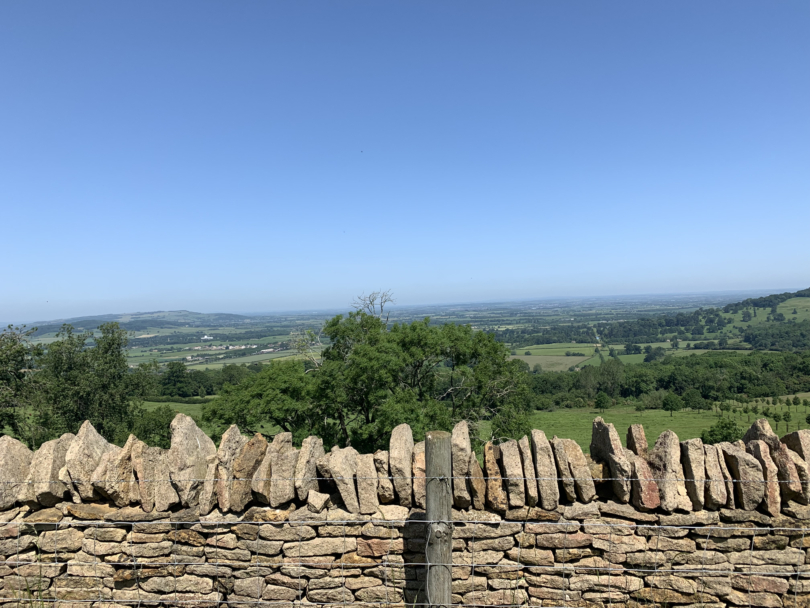
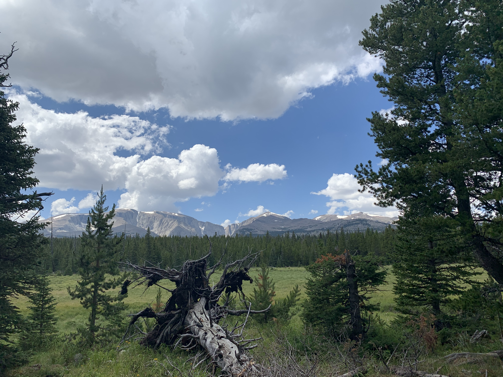

As you probably know by now I love the outdoors. I have been fortunate enough to travel to England and Wyoming to go on a week's hiking trip to travel and also explore the outdoors in different places. Don't get me wrong I think Wisconsin is a beautiful state but I also love to see how diverse and special our world really is. I've been to Devil's Lake countless times to hike the round trip around the lake and it has never once been less stunning as before.
My first big hiking trip was the summer after my high school graduation. was to spend a few days in London and get to see the city and then travel an hour train ride away to begin on the Cotswold Way trail doing inn to inn hikes. This trip was my first experience outside of the US and it was quite the treat. The image is from the top of a hill on the Cotswold Way along the hand-built stone walls used for marking county lines centuries ago. That is at least what our cab driver told us they were for. This is just one of the many crazy views from that trip.

My second big hiking trip was the following summer of 2020 to Wyoming Bighorn National Forest. We stayed at an Airbnb next to the mountains and went on day hikes after driving to the trailhead. Our only planned overnight trip was thunder stormed and hail stormed out. On our way back down to the trailhead while it was pouring there were people walking up in shorts and tees with overnight gear. I guess we were too big of sissies to tough it out. This image was from a clearing on the first day's hike where we got lost from the poorly marked trails but if we didn't get lost we wouldn't have gotten this crazy view!
